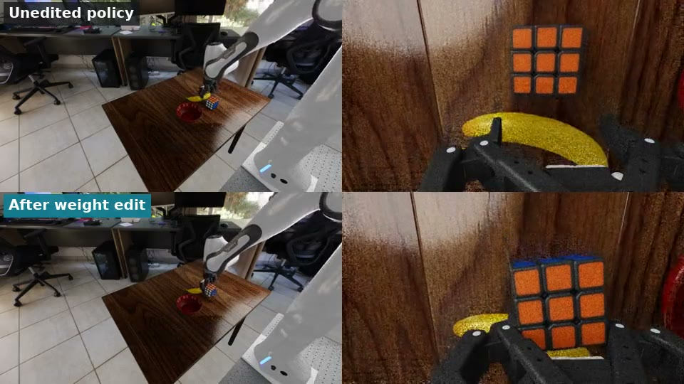
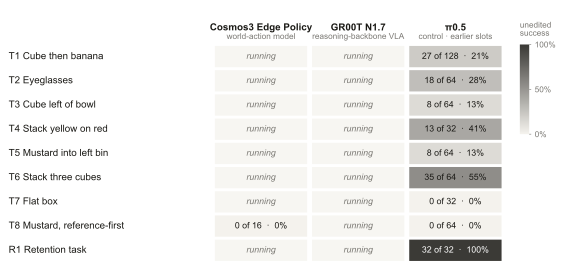
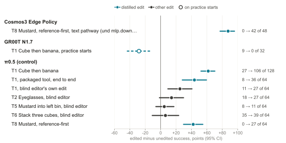
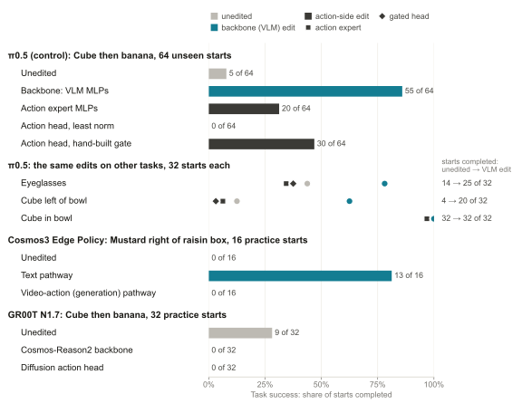
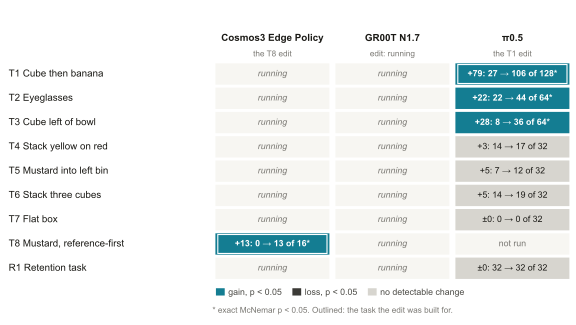

weightsmith · cross-model comparison · draft
Where does weight-space programming fix failures?
A world-action model, NVIDIA Cosmos3 Edge Policy, and a VLA on a reasoning backbone, NVIDIA GR00T N1.7, on the same RoboLab DROID tasks and starts, scored the same way, with π0.5 as the control.
TL;DR
- π0.5 OpenPI VLA, control earlier records Edits lifted success on T1 from 27 to 106 of 128 unseen starts (p = 7.2 × 10⁻²²) and on T8 from 0 to 27 of 64 (p = 1.5 × 10⁻⁸). A random edit of the same size scored 9 of 64 on T1, against 13 unedited. No detectable gain on T4–T7, failures of perception, contact or missing skill.
- Cosmos3 Edge Policy world-action model Failure map and edits: running.
- GR00T N1.7 reasoning-backbone VLA Failure map and edits: running. First finding: on the same 16 starts of banana onto plate it succeeded 5 times under RoboLab’s performance render preset and 16 under the default preset, so all three models are compared under the default.
- Side effects π0.5’s T1 edit, run unchanged on T2–T7 and R1, lifted T2 (22 → 44 of 64) and T3 (8 → 36 of 64), made none detectably worse, and kept the retention task R1 at 32 of 32. Cosmos3 Edge Policy and GR00T N1.7: running.
Lifted and worse mean an exact McNemar p < 0.05 on the same starts, edited against unedited. π0.5’s numbers are earlier records, each on its own slots and number of starts; the shared-slot runs replace them as they land.
The question
On π0.5, a closed-form weight edit fixed failures that came from how the instruction was read, where a clearer wording of the same goal already worked: copying that wording’s internal effect into the weights, with no training, lifted success on unseen starts from 27 to 106 of 128, while failures of perception, contact or missing skill stayed unfixed. Does the same hold for a world-action model, which reads the instruction while it predicts video and actions, and for a VLA built on a reasoning backbone? And where in each model does the edit have to go?
A first cross-model finding. GR00T N1.7 depends on how the simulator renders: on the same 16 starts of banana onto plate it succeeded 5 times under RoboLab’s performance preset, which renders without the RTX denoiser, and 16 times under the default preset, NVIDIA’s validated configuration. All three models are therefore compared under the default preset; π0.5’s earlier records used the performance preset. Rendering sensitivity
Three models
Cosmos3 Edge Policy
NVIDIA world-action model · running
- Architecture
- One transformer denoises an action chunk together with future video latents, conditioned on the instruction: a mixture of transformers with 28 layers of width 2048, each holding a text pathway and a generation pathway for video and action tokens. It sees the wrist and both shoulder cameras as one composite image and returns 32 joint-position steps per request, run open loop at 15 Hz.
- Where the instruction enters
- Text tokens attend only to text; video and action tokens attend to the text keys and values in every layer, so the instruction reaches the actions only through those keys and values (read from the code that served Cosmos3 Nano).
- Where an edit can go
- text pathway / video-action (generation) pathway
- Checkpoint
nvidia/Cosmos3-Edge-Policy-DROIData7c7288, 3.37B parameters- How it is scored
- Closed loop on the shared RoboLab DROID tasks and slots; settings of the Same Goal, Different Words study (4 sampling steps, guidance 3).
GR00T N1.7
NVIDIA vision-language-action policy · running
- Architecture
- A Cosmos-Reason2-2B vision-language backbone (Qwen3-VL), cut to its first 16 language layers, reads an exterior and a wrist camera (180 × 320 each) and the instruction. The action head, 4 self-attention layers and 32 diffusion-transformer blocks, turns the backbone's tokens and the robot state into 40-step chunks by flow matching; the first 8 steps run at 15 Hz.
- Where the instruction enters
- As text tokens in the Cosmos-Reason2 backbone, next to the image tokens (lowercased, punctuation removed). The action head reads the instruction only through the backbone's tokens.
- Where an edit can go
- Cosmos-Reason2 backbone / diffusion action head
- Checkpoint
nvidia/GR00T-N1.7-DROIDat05e7cc9, 3.14B parameters- How it is scored
- Closed loop on the shared RoboLab DROID tasks and slots, NVIDIA's validated client and embodiment setting.
π0.5
OpenPI vision-language-action policy, the control · earlier records
- Architecture
- An 18-layer PaliGemma vision-language model (VLM) and an 18-layer Gemma action expert. The action expert attends to the VLM's keys and values and produces 15-step action chunks, including a gripper command, by flow matching.
- Where the instruction enters
- As text tokens in the VLM, together with image tokens from two cameras and robot-state tokens, under bidirectional attention, so the image tokens read the instruction. The distilled edit goes into the VLM's MLP weights.
- Where an edit can go
- VLM / action expert / action head
- Checkpoint
pi05_droid_jointpos(OpenPI), about 3.35 billion parameters- How it is scored
- Closed loop on RoboLab in Isaac Sim. Until its shared-slot runs land, its cells are earlier records (RTX 3090, performance render preset), each tagged with its own slots and number of starts. Trained on DROID data and none of these tasks.
Experiments in this comparison
Every model runs the same tracks on the same tasks, T1 to T8, and a retention task, R1.
- Failure map
- Unedited success on each task, and how the model fails where that was diagnosed.
- Wording sensitivity
- Unedited success under the original and a clearer wording of the same goal. Without a gap there is nothing to distil.
- Edit and same-size random control
- Unedited → edited on held-out starts never used to build the edit: fixed and broke pairs, exact McNemar p, paired bootstrap 95% CI; against an update with the edit’s layers, rank and singular values in random directions. Also teacher recovery, (edited − unedited) / (teacher − unedited) with the clear wording as the teacher, and the edit’s size.
- Where to edit
- The same distillation in different parts of each model. π0.5: VLM, action expert, action head. GR00T N1.7: Cosmos-Reason2 backbone, diffusion action head. Cosmos3 Edge: text pathway, video-action pathway.
- Side-effect map
- Each model’s main edit, unchanged, on every suite task, paired with the unedited model: transfer where it helps, harm where it hurts, retention on R1.
- Noise floor
- Identical weights rerun on the same starts: how often paired outcomes differ, which sets the smallest change a comparison can detect.
At a glance
On π0.5, distillation fixed the two failures that came from the wording, T1 and T8, and through transfer lifted two more, T2 and T3. No edit fixed the perception, contact or missing-skill failures, T4 to T7.
| Row | Cosmos3 Edge Policyworld-action model | GR00T N1.7reasoning-backbone VLA | π0.5OpenPI VLA, control · earlier slots |
|---|---|---|---|
| T1 Cube then banana | running | running | fixed: 27 → 106 of 128 earlier slotsdistilled edit; 81 / 2, p = 7.2 × 10⁻²² |
| T2 Pick up the eyeglasses | running | running | T1 edit: 22 → 44 of 64 earlier slotsown edit 18 → 27 of 64, not significant |
| T3 Cube left of the bowl | running | running | T1 edit: 8 → 36 of 64 earlier slotsno own edit submitted |
| T4 Stack yellow on red | running | running | no gain earlier slotslookalike perception; no clear wording |
| T5 Mustard into the left bin | running | running | no gain earlier slotsown edit 8 → 11 of 64; the grasp slips |
| T6 Stack three cubes | running | running | no gain earlier slotsown edit 35 → 39 of 64 |
| T7 Pick up the flat box | running | running | no gain earlier slotsa missing skill; 0 of 64 unedited |
| T8 Mustard right of the raisin box, reference-first | running | running | fixed: 0 → 27 of 64 earlier slotsdistilled edit; 27 / 0, p = 1.5 × 10⁻⁸ |
| R1 Retention task | running | running | kept: 32 → 32 of 32 earlier slotscube into the bowl, T1 edit |
| Rendering: performance → default preset | running | 5 → 16 of 16Banana onto plate | running |
| Random control, same size | running | running | 9 of 64 earlier slotsT1; unedited 13, edit 50 |
| Where to edit | running | running | VLM 55, action expert 20, head 0 of 64 earlier slotsT1; unedited 5; only the VLM edit transfers |
Same start, three models
One start of T1 and one of T8, from the same initial scene for every model, unedited.
Before and after the edit
For each model, the unedited and the edited policy on a start where the edit helped.

Clip coming1. Failure map
Unedited success on each shared task. For π0.5 each failure was diagnosed from its recorded decisions; the NVIDIA models’ diagnoses come with their runs.



| Row | Cosmos3 Edge Policyworld-action model | GR00T N1.7reasoning-backbone VLA | π0.5OpenPI VLA, control · earlier slots |
|---|---|---|---|
| T1 Cube then banana | running | running | 27 of 128 earlier slots21%; slots 90000–90127; lets go of the cube early: binds “in the bowl” to the banana |
| T2 Pick up the eyeglasses | running | running | 18 of 64 earlier slots28%; slots 91008–91071; grasps one temple arm and lifts too little |
| T3 Cube left of the bowl | running | running | 8 of 64 earlier slots13%; slots 90000–90063; carries along a diagonal and leaves the cube behind the bowl |
| T4 Stack yellow on red | running | running | 13 of 32 earlier slots41%; slots 70000–70031; goes first for a lookalike yellow object |
| T5 Mustard into the left bin | running | running | 8 of 64 earlier slots13%; slots 91008–91071; the bottle slips from a cap grasp mid-carry |
| T6 Stack three cubes | running | running | 35 of 64 earlier slots55%; slots 91008–91071; builds two cubes, then closes on air above the stack |
| T7 Pick up the flat box | running | running | 0 of 32 earlier slots0%; slots 70000–70031; never lifts it: the box is wider than the open gripper |
| T8 Mustard right of the raisin box, reference-first | running | running | 0 of 64 earlier slots0%; slots 92000–92063; takes the wrong object or carries it the wrong way |
| R1 Retention task | running | running | 32 of 32 earlier slots100%; slots 94016–94047 |
Until its shared-slot runs land, π0.5's cells are earlier records: for each task the largest earlier run, on its own slots, as the π0.5 track lists them with every other measurement. Its unedited rate on T1 ranged from 8% to 21% across six start sets, so compare models on the shared slots.
Rendering sensitivity
The same starts under RoboLab’s performance render preset and its default preset. Fresh runs of all three models use the default preset.
| Row | Cosmos3 Edge Policyworld-action model | GR00T N1.7reasoning-backbone VLA | π0.5OpenPI VLA, control · earlier slots |
|---|---|---|---|
| Same starts: performance → default preset | running | 5 → 16 of 16performance → default; Banana onto plate, the same 16 starts (slots 0–15); 11 / 0, p = 9.8 × 10⁻⁴; NVIDIA's own serving path, default preset: 16 of 16 | running |
Records: cross/groot/results/validation/official-bop16.episode_results.jsonl, cross/groot/results/validation/smoke-bop-s0-default.json, cross/groot/results/validation/smoke-bop-s0.json
The performance preset renders without the RTX denoiser, which leaves speckle noise on every surface; the default preset is NVIDIA's validated configuration. All three models are compared under the default preset. π0.5's earlier records, including the paper's, used the performance preset.
2. Wording sensitivity
Distillation needs a wording that already works. π0.5 has one on two tasks: the explicit two-step wording on T1 and the target-first wording on T8. On T4 no rewording helped, so there was nothing to distil.


| Row | Cosmos3 Edge Policyworld-action model | GR00T N1.7reasoning-backbone VLA | π0.5OpenPI VLA, control · earlier slots |
|---|---|---|---|
| T1 Cube then banana | running | running | 13 → 57 of 64 earlier slots45 / 1, p = 1.3 × 10⁻¹²; +68.8 points [56.2, 79.7]; held-out slots 90000–90063; “Put the cube then the banana in the bowl” → “Put the cube in the bowl then put the banana in the bowl” |
| T4 Stack yellow on red | running | running | no clear wording found earlier slotsno rewording moved the arm in the blind editor's replays, so there was nothing to distil |
| T8 Mustard right of the raisin box, reference-first | running | running | 0 → 27 of 32 earlier slots27 / 0, p = 1.5 × 10⁻⁸; +84.4 points [71.9, 96.9]; practice slots 20000–20031; reference-first → target-first: “Move the mustard bottle on the table so that the raisin box is to the left of the mustard bottle.” → “Move the mustard bottle on the table so that the mustard bottle is to the right of the raisin box.” |
Records: opus/controls/ctl1-90000-64.analysis.json, sgdw/results/screen_s4r_tf_vs_rf.json
Reference-first describes the placement from the reference object's side, target-first from the moved object's side. In the earlier Same Goal, Different Words study (8 starting layouts per goal, no paired starts), reference-first wording lowered stable placement by 8.1 points for Cosmos3 Edge across 12 goals; on this goal Edge placed 4 of 8 under target-first and 0 of 8 under reference-first.
3. The edit and its controls
Edits on unseen starts
Each task’s own edit, scored by the operator on held-out starts that were never used to build it.



| Row | Cosmos3 Edge Policyworld-action model | GR00T N1.7reasoning-backbone VLA | π0.5OpenPI VLA, control · earlier slots |
|---|---|---|---|
| T1 Cube then banana | running | running | 27 → 106 of 128 earlier slotsdistilled edit, operator-built; 81 / 2, p = 7.2 × 10⁻²²; +61.7 points [52.3, 70.3]; held-out slots 90000–90127 |
T1, built end to end by the packaged tool (weightsmith distill) | — | — | 8 → 36 of 64 earlier slotsdecisions chosen by rule; 33 / 5, p = 4.3 × 10⁻⁶; +43.8 points [28.1, 59.4]; held-out slots 95008–95071 |
| T1, a blind autonomous editor's own edit | — | — | 11 → 27 of 64 earlier slotsgated action-head change, 1,024 values; 22 / 6, p = 0.0037; +25.0 points [9.4, 40.6]; held-out slots 91008–91071 |
| T2 Pick up the eyeglasses | running | running | 18 → 27 of 64 earlier slotsblind editor's edit; not significant; 18 / 9, p = 0.12; +14.1 points [−1.6, 29.7]; held-out slots 91008–91071 |
| T3 Cube left of the bowl | running | running | no edit submitted earlier slotsthe blind editor's candidate scored 5 → 3 of 32 on practice starts and broke grasping |
| T4 Stack yellow on red | running | running | no gain earlier slotsthree edits, 28 → 21 of 64 each on practice starts; no clear wording to distil |
| T5 Mustard into the left bin | running | running | 8 → 11 of 64 earlier slotsblind editor's edit; not significant; 9 / 6, p = 0.61; +4.7 points [−6.2, 17.2]; held-out slots 91008–91071 |
| T6 Stack three cubes | running | running | 35 → 39 of 64 earlier slotsblind editor's edit; not significant; 17 / 13, p = 0.58; +6.2 points [−10.9, 23.4]; held-out slots 91008–91071 |
| T7 Pick up the flat box | running | running | no gain earlier slotsunedited 0 of 64; 10 edits, none succeeded (a skill the policy lacks) |
| T8 Mustard right of the raisin box, reference-first | running | running | 0 → 27 of 64 earlier slotsdistilled edit from the target-first wording; 27 / 0, p = 1.5 × 10⁻⁸; +42.2 points [29.7, 54.7]; held-out slots 92000–92063 |
Records: ctrl/heldout/ctrl-ctb__p1-RubiksCubeThenBananaTask-91008-64.json, ctrl/heldout/ctrl-glasses__p1-PickGlassesTask-91008-64.json, ctrl/heldout/ctrl-mustard__p1-MustardInLeftBinTask-91008-64.json, ctrl/heldout/ctrl-stack3__p1-Stack3RubiksCubeTask-91008-64.json, ctrl/summary.json, opus/comparisons.json, opus/heldout/cube-then-banana__v2mi-f-RubiksCubeThenBananaTask-90000-128.json, sgdw/results/heldout_pairs_92000-64.json, tutorial/tutorial-ctb__ctb-first-95008-64.results.json
Distilled edits copy the clear wording's internal effect (teal in the figures); the blind editors designed their own edits under the same rules (dark). The packaged tool's 2 × 2 table happens to equal the T1 edit's transfer to T3 (8 → 36 of 64, 33 / 5): different tasks, different starts.
Random-direction control of the same size
If the gain came from the size of the change rather than its direction, a random update of the same size would do as well.


| Row | Cosmos3 Edge Policyworld-action model | GR00T N1.7reasoning-backbone VLA | π0.5OpenPI VLA, control · earlier slots |
|---|---|---|---|
| T1 Cube then banana | running | running | control 9, unedited 13, edit 50 of 64 earlier slotscontrol vs unedited 6 / 10, p = 0.45; values changed 502,291,925 (control) vs 450,468,837 (edit); held-out slots 90000–90063 |
| T8 Mustard right of the raisin box, reference-first | running | running | control 0, unedited 0, edit 27 of 64 earlier slotsheld-out slots 92000–92063 |
Records: opus/comparisons.json, opus/controls/ctl1-90000-64.analysis.json, sgdw/results/heldout_pairs_92000-64.json
The control keeps every layer's singular values and replaces the singular vectors with random orthonormal bases (seed 0), so its Frobenius norm matches the edit's in every layer.
Teacher recovery
| Row | Cosmos3 Edge Policyworld-action model | GR00T N1.7reasoning-backbone VLA | π0.5OpenPI VLA, control · earlier slots |
|---|---|---|---|
| T1 Cube then banana | running | running | 84% earlier slots(50 − 13) / (57 − 13) of 64, computed here; edit vs teacher 4 / 11, p = 0.12; held-out slots 90000–90063 |
| T8 Mustard right of the raisin box, reference-first | running | running | 59% earlier slots(16 − 0) / (27 − 0) of 32, practice slots 20000–20031, which were used to build the edit; the teacher was not run on unseen starts |
Records: opus/controls/ctl1-90000-64.analysis.json, sgdw/results/practice_rf_grp3_vs_base.json, sgdw/results/practice_tf_grp3_vs_base.json
100% would mean the edit does everything the clear wording does while the original wording stays.
Where to edit
π0.5 is the reference. Written into the VLM, the distillation fixed T1 and transferred. Written into the action expert it needed an update about as large as the weights and gained a third as much; as a plain change to the action head it fixed nothing.



| Row | Cosmos3 Edge Policyworld-action model | GR00T N1.7reasoning-backbone VLA | π0.5OpenPI VLA, control · earlier slots |
|---|---|---|---|
| Task, starts | running | running | T1, 64 unseen starts earlier slotsheld-out slots 94016–94079 |
| Unedited | running | running | 5 of 64 earlier slots |
| Backbone / text pathway | running | running | VLM MLPs: 55 of 64 earlier slots50 / 0, p = 1.8 × 10⁻¹⁵; the VLM's weights also process the image tokens, where this edit is keyed |
| Action pathway | running | running | action expert 20, action head 0 of 64 earlier slotsexpert 20 / 5, p = 0.0041; head 0 / 5; a head edit with a hand-built gate (blind editor): 30 |
| Both | running | running | VLM + action expert: 43 of 64 earlier slotsbelow the VLM edit alone, p = 0.017 |
| Which one transfers | running | running | only the backbone edit earlier slotseyeglasses 14 → 25, cube left of the bowl 4 → 20 of 32; action expert 11 and 2, gated head 12 and 1 (all p ≥ 0.38); slots 94016–94047 |
| Size of each | running | running | VLM 13.4%, expert 1.8% of values; head 8,056 earlier slotsmedian change per layer: VLM 1.7% of the weight norm, action expert 99% |
Records: opus/comparisons.json, opus/where/results/heldout_analysis.json, opus/where/results/size_summary.json, opus/where/results/transfer_glasses_analysis.json, opus/where/results/transfer_left_analysis.json
In π0.5 the VLM's weights process image and text tokens alike, and the edit is keyed at the image tokens. In Cosmos3 the video and action tokens have their own weights (the generation pathway), so its closest counterpart is the video-action pathway; the text pathway is the other candidate. In GR00T the backbone is Cosmos-Reason2-2B and the action pathway is the diffusion head.
Edit size
| Row | Cosmos3 Edge Policyworld-action model | GR00T N1.7reasoning-backbone VLA | π0.5OpenPI VLA, control · earlier slots |
|---|---|---|---|
| T1 Cube then banana | running | running | 450,468,837 values (13.4%) earlier slotsVLM MLP down-projections, layers 0–16, rank ≤ 72 per layer; as factors 22.6M (0.67%); median change 1.7% of each layer's norm |
| T1, smaller variant (image cells, layers 8–16) | — | — | 5.3M as factors (0.16%) earlier slotsimage cells, layers 8–16, rank ≤ 32 per layer; 19 → 102 of 128 unseen starts; stored values changed 248,057,499; the packaged tool's edit uses this recipe |
| T1, smallest edit that passed unseen starts | — | — | 1,024 values earlier slotsthe blind editor's gated action-head change |
| T8 Mustard right of the raisin box, reference-first | running | running | 15.9M as factors (0.47%) earlier slotsVLM layers 8–16, rank ≤ 96 per layer, image cells; three decision phases as separate key groups |
Records: ctrl/summary.json, opus/comparisons.json, opus/heldout/cube-then-banana__abl-imgl8-RubiksCubeThenBananaTask-90000-128.json, sgdw/runs/s4r/build_grp3.json
A low-rank update is dense in its weight matrix: the 0.16% variant changes 7.4% of stored values; as factors it is 0.16% of the parameters.
4. After the edit: does everything else still work?
The side-effect map runs each model’s main edit, unchanged, on every suite task and pairs it with the unedited model on the same starts. A gain away from the target task is transfer, a loss is harm, and R1 checks retention.



| Row | Cosmos3 Edge Policyworld-action model | GR00T N1.7reasoning-backbone VLA | π0.5OpenPI VLA, control · earlier slots |
|---|---|---|---|
| T1 Cube then banana | running | running | +79: 27 → 106 of 128 earlier slots81 / 2; p = 7.2 × 10⁻²²; the target task; slots 90000–90127 |
| T2 Pick up the eyeglasses | running | running | +22: 22 → 44 of 64 earlier slots31 / 9; p = 6.8 × 10⁻⁴; slots 90000–90063 |
| T3 Cube left of the bowl | running | running | +28: 8 → 36 of 64 earlier slots33 / 5; p = 4.3 × 10⁻⁶; slots 90000–90063 |
| T4 Stack yellow on red | running | running | +3: 14 → 17 of 32 earlier slots9 / 6; p = 0.61; slots 20000–20031 |
| T5 Mustard into the left bin | running | running | +5: 7 → 12 of 32 earlier slots11 / 6; p = 0.33; slots 60000–60031 |
| T6 Stack three cubes | running | running | +5: 14 → 19 of 32 earlier slots9 / 4; p = 0.27; slots 60000–60031 |
| T7 Pick up the flat box | running | running | ±0: 0 → 0 of 32 earlier slots0 / 0; p = 1; slots 60000–60031 |
| T8 Mustard right of the raisin box, reference-first | running | running | not run earlier slotsthe T1 edit was not run on T8, which has its own edit |
| R1 Retention task | running | running | ±0: 32 → 32 of 32 earlier slots0 / 0; p = 1; slots 94016–94047 |
Each model's main edit, unchanged, on every suite task. π0.5's earlier records use the T1 edit: T1–T3 on unseen starts (128 or 64), T4–T7 on 32 practice starts, R1 on 32 fresh starts; it was not run on T8. Across fifteen other surveyed tasks it harmed none detectably.
Retention
| Row | Cosmos3 Edge Policyworld-action model | GR00T N1.7reasoning-backbone VLA | π0.5OpenPI VLA, control · earlier slots |
|---|---|---|---|
| R1 Retention task | running | running | 32 → 32 of 32 earlier slotscube into the bowl, the T1 edit; slots 94016–94047; also 16 → 16 of 16, and banana onto plate 16 → 16 of 16 |
| The clear wording, after the edit | — | — | 27 → 23 of 32 earlier slotsT8 under the target-first wording, with the T8 edit; 5 / 9, p = 0.42: not detectable at 32 pairs, not excluded; practice slots 20000–20031 |
| Recorded decisions it must not change | — | — | unchanged earlier slotsall 9 recorded correct carries and all 19 banana-phase decisions unchanged (T1 edit, offline replay) |
Records: opus/comparisons.json, opus/where/results/transfer_cube_analysis.json, sgdw/results/practice_rf_grp3_vs_base.json, sgdw/results/practice_tf_grp3_vs_base.json
At these sample sizes a retention check rules out only large losses (see the noise floor).
5. Caveats
- Simulation only. Every number comes from RoboLab tasks in Isaac Sim; none is from a physical robot.
- One released checkpoint per model. π0.5 was trained on DROID data and on none of these tasks. Each NVIDIA run records its checkpoint and revision.
- Sample sizes. Held-out comparisons use 64 paired starts on the shared slots; π0.5’s earlier records use 32 to 128 starts on their own slots. With about 30% of pairs differing, 64 pairs reliably detect only changes of about 19 points.
- Earlier π0.5 records are not on the shared slots or the default preset. They ran on an RTX 3090 under the
performancerender preset. Each is tagged “earlier slots”, names its own slots and number of starts, and gives way to the shared-slot run when it lands. - Different interfaces. π0.5 sees two 224 × 224 views and executes 15-step chunks; GR00T N1.7 sees two 180 × 320 views and executes 8 steps of each 40-step chunk; Cosmos3 Edge sees one composite of three views and executes 32 steps open loop. All run at 15 Hz. Compare what an edit fixes and breaks within each model, not absolute success across models.
- Who built the edits. π0.5’s distilled edits were built by an operator session (Claude Opus) under the editor rules; the blind editors’ edits by autonomous editors that saw only their own task. Every held-out score is the operator’s, on starts no editor saw.
- T8. Its edit was designed using practice data adaptively; held-out starts were never used for any choice, and its teacher was not run on unseen starts.
- Architecture notes. Layer counts come from each track’s record; that Cosmos3 Edge routes the instruction only through text keys and values was read from the code that served Cosmos3 Nano. Each run’s record states the layers it actually edited.
Noise floor
| Row | Cosmos3 Edge Policyworld-action model | GR00T N1.7reasoning-backbone VLA | π0.5OpenPI VLA, control · earlier slots |
|---|---|---|---|
| Unedited, run twice on the same starts | running | running | 13 vs 9 of 64 earlier slots12 of 64 pairs differ (19%); T1, held-out slots 90000–90063 |
| Identical edited weights, run twice | — | — | agreed on 46 of 64 earlier slots28% of pairs differ (paper, Appendix B) |
| Unedited rerun, butter on the raisin box | — | — | 14 vs 8 of 16 earlier slots38% of pairs differ; exact p = 0.031 with nothing changed |
| Typical share of pairs that differ | — | — | about 30% earlier slotsa near-neutral one-weight edit: 70 of 192 |
| Smallest detectable change | running | running | 27 / 19 / 14 / 10 points earlier slotsat 32 / 64 / 128 / 256 pairs, 80% power, α = 0.05, 30% of pairs differing |
Records: opus/comparisons.json, opus/controls/ctl1-90000-64.analysis.json
Simulated physics on GPUs is not bit-repeatable, and a policy that executes many actions between looks amplifies small differences. Every comparison pairs starts and uses exact tests for that reason.
Method and reproducibility
Closed-form instruction distillation. Record decisions where the model fails, replay them under the original and the clear wording, and at each edited layer apply
ΔW = K⊤(KK⊤ + λI)−1Vrows of K: the layer’s inputs under the original wording; rows of V: the clear wording’s change to the layer’s output at the same positions; λ = 10−3 tr(KK⊤)/n
One least-squares solve per layer, with no gradients and no training data; the instruction the model receives is unchanged. The random control keeps the edit’s layers, rank and singular values and draws random directions.
Shared slots. All three models use slots 30000–30031 for the failure map and practice, and slots 96000–96063 for held-out comparisons, with identical initial scenes. Edited and unedited models are paired start by start. π0.5’s earlier records used other slots, named in each cell and tagged “earlier slots”.
Render preset. Fresh runs of all three models use RoboLab’s default render preset, which is Isaac Lab’s “balanced” setting (no --rendering-type flag) and NVIDIA’s validated configuration. π0.5’s earlier records, including the paper’s results, used the performance preset, which renders without the RTX denoiser.
Statistics. Exact two-sided McNemar test on the fixed and broke pairs; paired bootstrap 95% interval of the difference (20,000 draws over the four paired outcome types, seed 0); Wilson intervals for single rates.
- Paper: Distilling Instructions into Weights: Closed-Form Edits Fix a Robot Policy’s Misreading
- Code and records: github.com/adeeb10abbas/weightsmith
- π0.5 records: held-out runs, random control and teacher, where to edit, blind editors, T8 wording pilot, the packaged tool, end to end
- Cross-model records, as they land: Cosmos3 Edge, GR00T N1.7, π0.5 on the shared slots
- This page’s numbers: metrics.json; the one-page brief: PDF
Every table and figure here is rebuilt from the records by python3 site/scripts/make_cosmos_metrics.py.